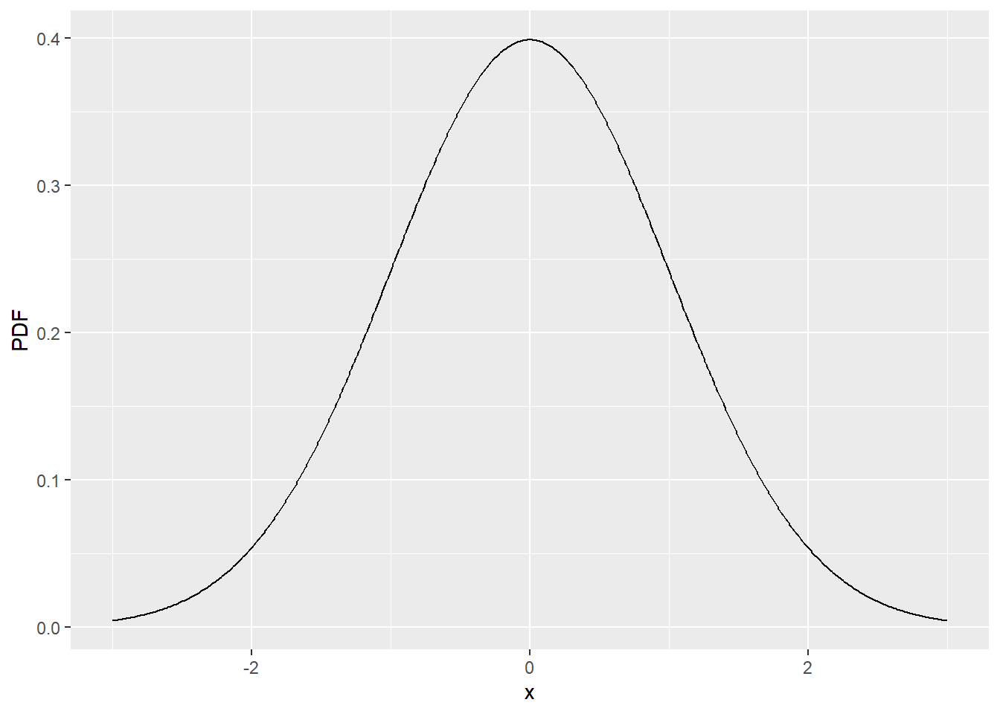
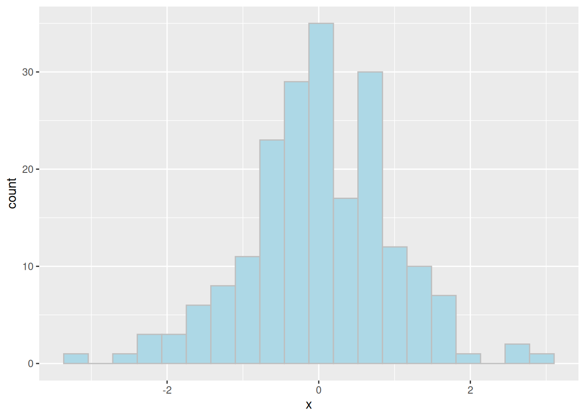

# Numeric
3 + 7[1] 106 - 14[1] -85*9[1] 45100/3[1] 33.33333# Character
"Hello! I work at GSK"[1] "Hello! I work at GSK"# Logical
6 > 7[1] FALSEis.numeric(12)[1] TRUER has 4 basic data types (modes) from which almost everything else is built upon. These are:
# Numeric
3 + 7[1] 106 - 14[1] -85*9[1] 45100/3[1] 33.33333# Character
"Hello! I work at GSK"[1] "Hello! I work at GSK"# Logical
6 > 7[1] FALSEis.numeric(12)[1] TRUENote that the logical values TRUE and FALSE are reserved words, meaning that we cannot overwrite (mask) them. In the examples above the logicals were produced by asking a question. It is also possible to create them directly (x <- TRUE). When doing so, they must be written exactly using capital letters and without quotation marks. We will look at the usage of logicals more closely later on in the course.
The terms used above are formal definitions in R. The mode function lets us query the type of any element.
mode(5) # numeric[1] "numeric"mode("have a guess") # character[1] "character"A vector is a collection of elements/values that have the same type or “mode”. In R, vectors technically have no dimension but we will usually treat them as columns of data in a dataset (data frame).
We can easily create vectors using the c function to “combine” one or more elements together.
# Numeric vectors
c(5, 42, 99)[1] 5 42 99c(6.423, 7.324, 9.225)[1] 6.423 7.324 9.225# Character vectors
c("I", "have", "four", "elements")[1] "I" "have" "four" "elements"We can also combine vectors using c.
# Create a couple of vectors
vec1 <- c(5,9,2)
vec1[1] 5 9 2vec2 <- c(7,8,1)
vec2[1] 7 8 1# Combine the vectors
vec3 <- c(vec1, vec2)
vec3[1] 5 9 2 7 8 1NB: A scalar (single value) is technically just a vector with 1 element.
In addition to the c function, R contains a number of useful operators and utility functions for creating vectors. First we look at the seq function for generating sequences.
The seq function takes self-explanatory arguments “from” and “to”. By default, the incremental value is 1. We can optionally provide either “by” or “length” to change this.
# Simple sequence
seq(from = 1, to = 10) [1] 1 2 3 4 5 6 7 8 9 10# The same, but without specifying the arguments:
seq(1, 10) [1] 1 2 3 4 5 6 7 8 9 10# Counting down
seq(80, 60, by = -5)[1] 80 75 70 65 60# Using 'by' and 'length'
seq(from = 1, to = 10, by = 0.5) [1] 1.0 1.5 2.0 2.5 3.0 3.5 4.0 4.5 5.0 5.5 6.0 6.5 7.0 7.5 8.0
[16] 8.5 9.0 9.5 10.0seq(from = 10, to = 50, length = 5)[1] 10 20 30 40 50If we simply need a sequence of integers then the : operator provides a simple shortcut.
1:50 [1] 1 2 3 4 5 6 7 8 9 10 11 12 13 14 15 16 17 18 19 20 21 22 23 24 25
[26] 26 27 28 29 30 31 32 33 34 35 36 37 38 39 40 41 42 43 44 45 46 47 48 49 5010:1 [1] 10 9 8 7 6 5 4 3 2 1The rep function allows us to repeat a value(s). The arguments times and each provide us with some control of how the repetition is performed.
# Single values
rep(1, times = 6)[1] 1 1 1 1 1 1rep("z", times = 3)[1] "z" "z" "z"# Vectors
vec1 # Reminder of what this is[1] 5 9 2rep(vec1, times = 4) [1] 5 9 2 5 9 2 5 9 2 5 9 2rep(vec1, each = 4) [1] 5 5 5 5 9 9 9 9 2 2 2 2rep(vec1, times = c(5, 4, 6)) [1] 5 5 5 5 5 9 9 9 9 2 2 2 2 2 2# More advanced example
n_subj <- 5
n_visits <- 4
SUBJID <- rep(1:n_subj, each = n_visits)
SUBJID [1] 1 1 1 1 2 2 2 2 3 3 3 3 4 4 4 4 5 5 5 5VISITNUM <- rep(1:n_visits, n_subj)
VISITNUM [1] 1 2 3 4 1 2 3 4 1 2 3 4 1 2 3 4 1 2 3 4In R, missing data is represented by NA. The term NA is a reserved word in R. Like the reserved logical terms TRUE and FALSE, NA must be written exactly as it is written here, i.e. in capitals and without quotation marks, regardless of whether the data in question is numeric, character, or logical.
# Missing numeric
mis_num <- c(1,2,NA,4)
mis_num[1] 1 2 NA 4# Missing character
mis_let <- c("G", NA, "K")
mis_let[1] "G" NA "K"# Missing logical
mis_log <- c(mis_num > 5)
mis_log[1] FALSE FALSE NA FALSEExtra
In order to populate vectors and data frames (see next chapter) we can also simulate data. This is not a simulation course but we will briefly look at some of the easy ways in which we can simulate data, either via known distributions or by sampling from existing data.
R has a number of statistical distributions “built in”, a huge number more available through add-on packages. The built-in distributions all follow a consistent naming convention and structure. First of all each distribution has been given a short-form. For example, the normal distribution has the short form, “norm”. A handful of common short forms are listed below:
| Short Form | Distribution |
|---|---|
| norm | Normal |
| pois | Poisson |
| binom | Binomial |
| f | F |
| t | Student’s t |
| unif | Uniform |
| weibull | Weibull |
| gamma | Gamma |
| chisq | Chi-squared |
See help("Distributions") for more information on available distributions.
To each of the short forms we may apply one of four pre-fixes, d, p, q, r. When appended to a short-form distribution, the prefixes respectively provide:
d - the probability density function, PDF, for given valuesp - the cumulative distribution function, CDF, for given quantilesq - the inverse distribution function for given probabilitiesr - randomly generated numbers from the distribution for a given nSo for example if we wanted to know the PDF of a normal distribution between the values of -3 and 3 we would generate a sequence and then use a function, dnorm to find the densities. For example,
# Values of interest
x <- seq(-3, 3, by = .01)
PDF <- dnorm(x)
# Now let's plot using ggplot2
ggplot() +
geom_line(aes(x = x, y = PDF))
From a simulation perspective we are normally interested in sampling values from a known distribution. This is very straightforward. For example, if we want 200 numbers randomly sampled from a normal distribution we would write, rnorm(200). Which we might then plot as a histogram.
# Values of interest
x <- rnorm(200)
# Now let's plot using ggplot2
ggplot() +
geom_histogram(aes(x), bins = 20,
colour = I("grey"), fill = I("lightblue"))
As well as sampling from distributions we may also sample from a discrete set of values using the sample function. The sample function requires us to provide a vector to sample from, a number of samples to take. The function contains additional options for whether we wish to sample with replacement (replace) and/or whether we wish to give each value an equal chance of being sampled (prob).
Here are a few examples,
# Generate some subjects
treatment <- c("GSK", "Other")
# Sample values from this set, with replacement
sample(treatment, 50, replace = TRUE) [1] "GSK" "GSK" "Other" "Other" "GSK" "Other" "Other" "Other" "Other"
[10] "GSK" "Other" "GSK" "GSK" "GSK" "GSK" "Other" "GSK" "GSK"
[19] "Other" "Other" "Other" "Other" "GSK" "Other" "Other" "Other" "GSK"
[28] "GSK" "GSK" "GSK" "GSK" "GSK" "GSK" "Other" "GSK" "Other"
[37] "GSK" "GSK" "Other" "Other" "GSK" "Other" "GSK" "GSK" "GSK"
[46] "GSK" "Other" "GSK" "GSK" "Other"# Sample again but this time we want more 'Other' in our population,
# rougly 4 'Other' for every 'GSK' entry
sample(treatment, 50, replace = TRUE, prob=c(1,4)) [1] "Other" "Other" "Other" "Other" "Other" "Other" "Other" "Other" "Other"
[10] "Other" "Other" "GSK" "Other" "Other" "Other" "Other" "GSK" "GSK"
[19] "Other" "GSK" "Other" "Other" "Other" "Other" "Other" "Other" "Other"
[28] "GSK" "Other" "Other" "Other" "Other" "Other" "GSK" "Other" "Other"
[37] "Other" "GSK" "Other" "Other" "GSK" "Other" "Other" "Other" "GSK"
[46] "GSK" "Other" "Other" "GSK" "Other"There are actually several structures that can be used to store data in R. The most common structure, and the one we will work with on this course, is called a data.frame. Like a SAS dataset, a data frame is a collection of columns (vectors), each of which may have a different type (mode).
There are several built-in data frames, contained within the “datasets” package
objects("package:datasets")We can use the head and tail functions to view the first or last few rows of a data frame
# In-built airquality data
head(airquality) Ozone Solar.R Wind Temp Month Day
1 41 190 7.4 67 5 1
2 36 118 8.0 72 5 2
3 12 149 12.6 74 5 3
4 18 313 11.5 62 5 4
5 NA NA 14.3 56 5 5
6 28 NA 14.9 66 5 6tail(airquality) Ozone Solar.R Wind Temp Month Day
148 14 20 16.6 63 9 25
149 30 193 6.9 70 9 26
150 NA 145 13.2 77 9 27
151 14 191 14.3 75 9 28
152 18 131 8.0 76 9 29
153 20 223 11.5 68 9 30# Specifying a custom number of rows to display
head(airquality, 1) Ozone Solar.R Wind Temp Month Day
1 41 190 7.4 67 5 1